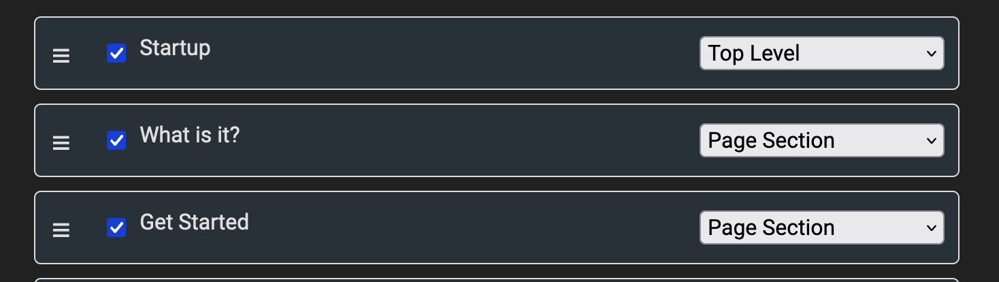
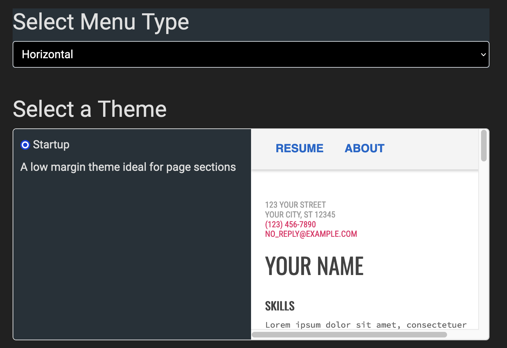

Single Page from Multiple Documents
January 19th, 2024
by Shai Almog
A common type of website on the internet and in the startup world is the multi-section page. In such a page a single web page is divided into multiple distinct sections. Each section is colored differently and might even feature completely different stylings. This is possible to accomplish in Google Docs but is awkward. The big problem is the menu, in such sites it doesn’t navigate to a different page. It navigates within the page by scrolling the page down or up. Up until this week this was impossible to accomplish in gdocweb, but it’s possible now.
Page Sections
This week we added a new option to the page type creation process “Page Section” as shown in the following screenshot:

When we define that a document is a “Page Section” we append its contents to the previous document but mark it as a separate section. Here we see a screenshot covering the creation of the Startup demo, each document represents one part of the page.
Notice in the demo that the menu includes the document names and scrolls to the applicable area in the page instead of navigating away.
New Theme
The problem with this approach is that sections are spaced out from one another. By default we add a great deal of padding between elements to create an experience similar to Google Docs. However, this doesn’t necessarily fit well when running such a demo. We want to stretch the sections out all the way to the edge of the browser and all the way down to the next section.
To do that we introduced a new theme called “Startup”, it isn’t adaptive since it’s hard to adapt such a theme when running with multiple colors. However, if there’s demand for this we can add additional options.

Better GitHub Projects
You might have noticed that I linked earlier to the GitHub project for startup. To make our templates/demos easier to read I reworked the project pages as you can see for each template:
- gdocweb Blog - the official gdocweb Blog is generated from Google Docs and supports sophisticated features such as an RSS feed, comments, etc.
- Documentation - documentation is trivial to write using gdocweb as shown in this template.
- Startup - a simple single page site generated from multiple separate documents to create a single page with internal navigation.
- Vacation Photos - Personal site covering a vacation or event.
- Resume - resume website.
- Recipe - cooking style website.
Hopefully these projects can help you discover new templates and approaches to build websites with gdocweb.
You can see the document that generated this post here.

Comments